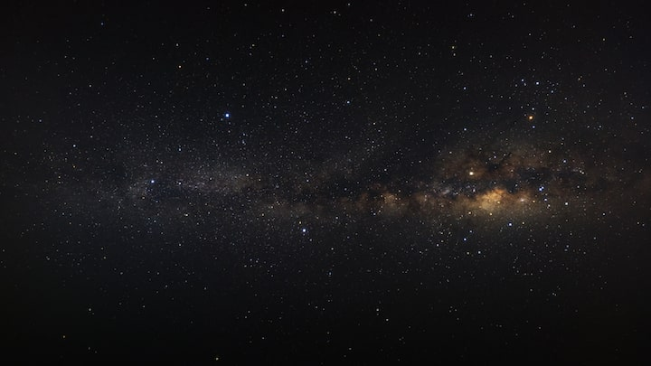
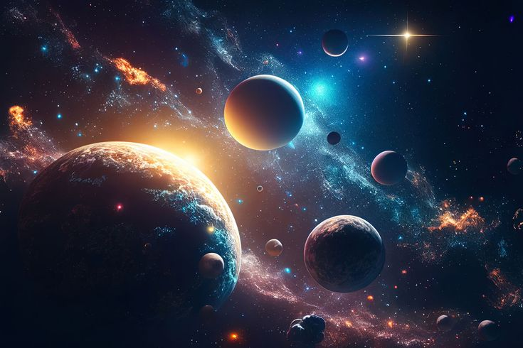

Explore the Universe
Discover stars, galaxies, and more.

Galaxies Beyond
Experience cosmic wonders.

Reach for the Stars
Your cosmic journey begins here.
Discover stars, galaxies, and more.
Experience cosmic wonders.
Your cosmic journey begins here.
Stellar Astronomy is dedicated to exploring the universe in an engaging and educational way. From the birth of stars to the vast spiral arms of galaxies, we break down complex cosmic phenomena into simple explanations supported by visuals and videos. Our mission is to make astronomy accessible for everyone, whether you are a curious student, an amateur stargazer, or someone fascinated by the cosmos.
Key topics you will explore in this journey include:
Follow this journey to see these concepts brought to life in the Stars and Galaxies sections below.
Continuing from About: the lifecycle and wonders of stars


As mentioned in About, stars are born in dense clouds of gas and dust called stellar nurseries. Gravity pulls these materials together, initiating nuclear fusion at the core. This is how a protostar becomes a main sequence star.
About introduced cosmic phenomena — supernovae, black holes, and nebulae. Here, we see how these events shape galaxies and seed the universe with elements.
Telescopes and binoculars, as discussed in About, allow enthusiasts to observe star clusters, nebulae, and variable stars. This bridges the knowledge from About to real sky observations.
Continuing from About & Stars: how stars form the vast structures of galaxies
As introduced in About, galaxies are enormous systems of stars, gas, dust, and dark matter. They are the cosmic cities where stars live, evolve, and die, creating a continuous cycle of matter in the universe.
Collisions, mergers, and tidal interactions shape star formation and trigger cosmic events. This connects About’s introduction of cosmic phenomena directly to galaxy evolution.
Telescopes allow observation of galaxies across millions of light-years, reinforcing concepts from About and Stars for a continuous learning experience.
Have questions? Send us a message!
Kabacan, Philippines
+63 930-7668-290
info@stellarastronomy.com